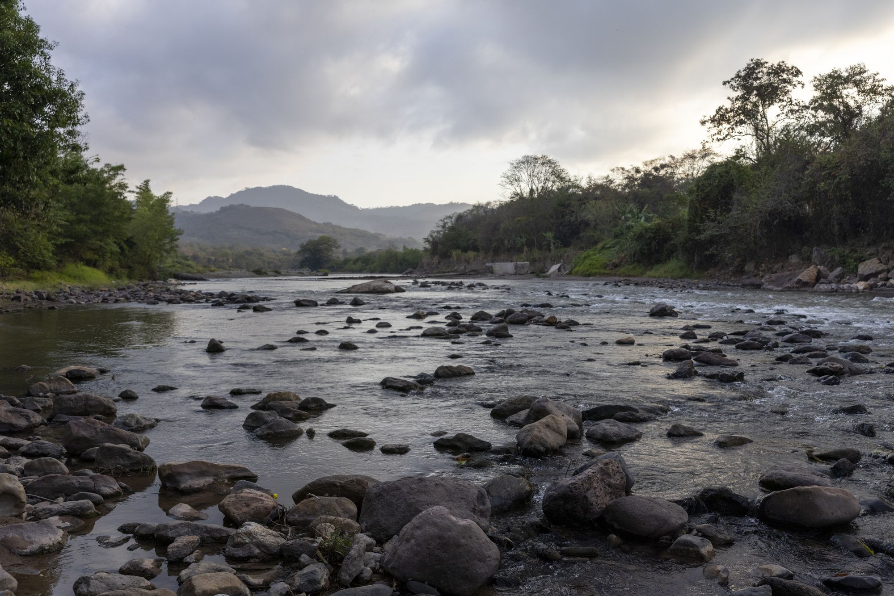
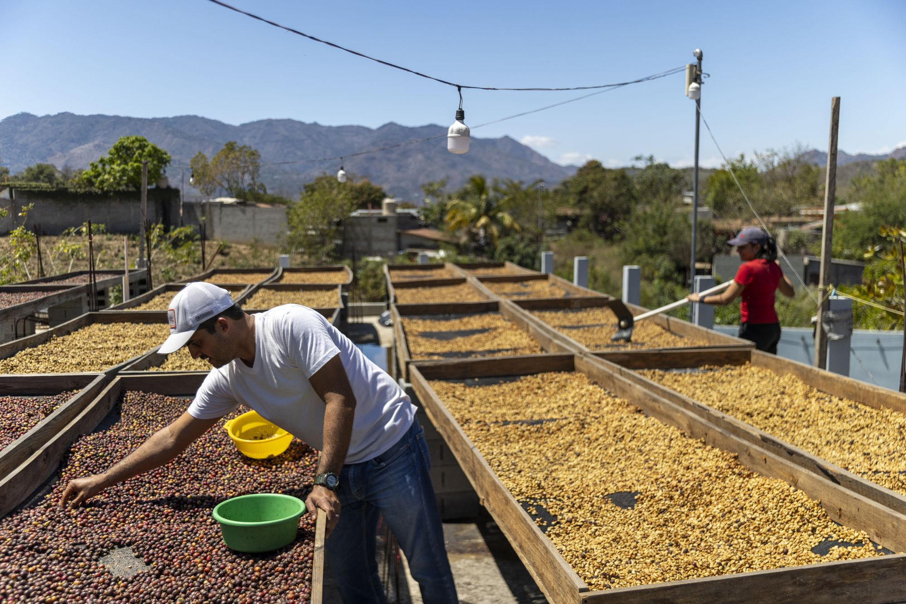
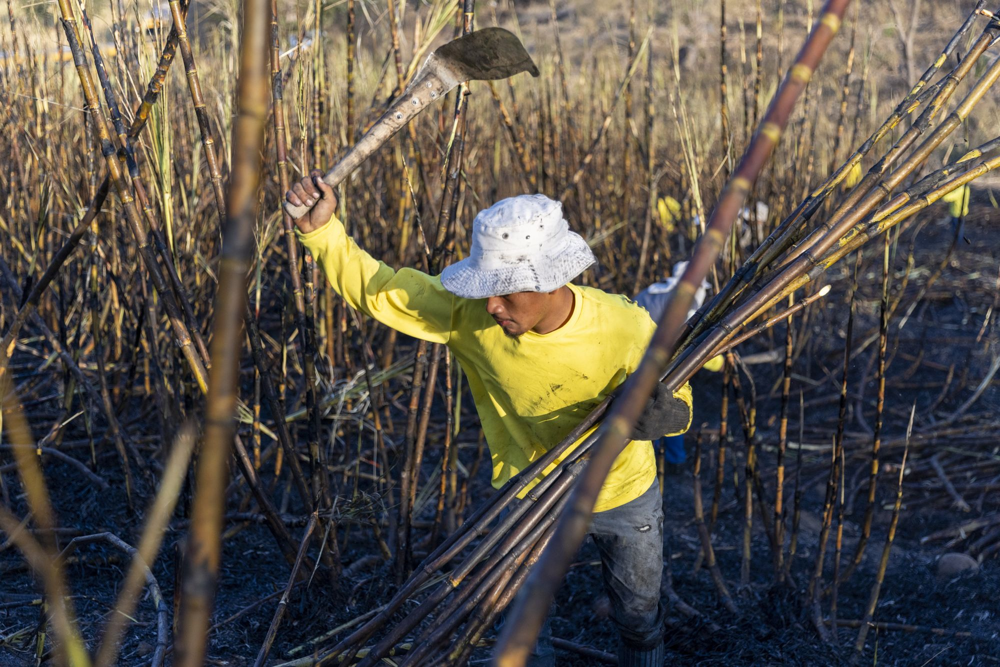
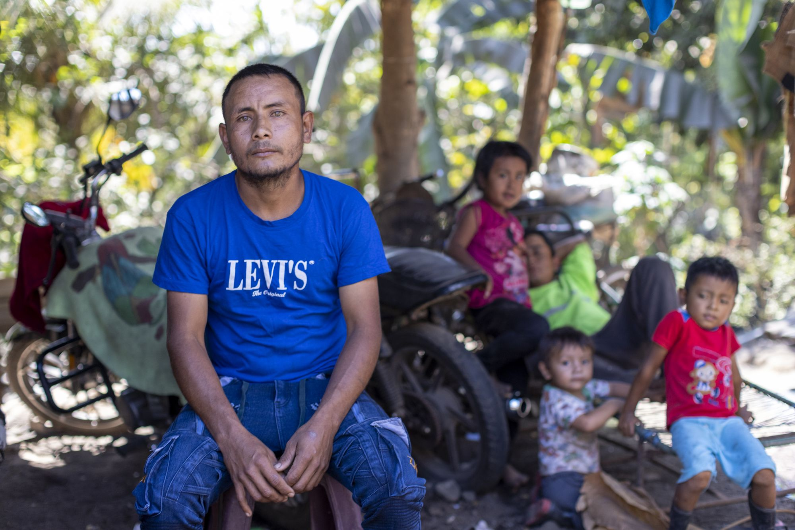
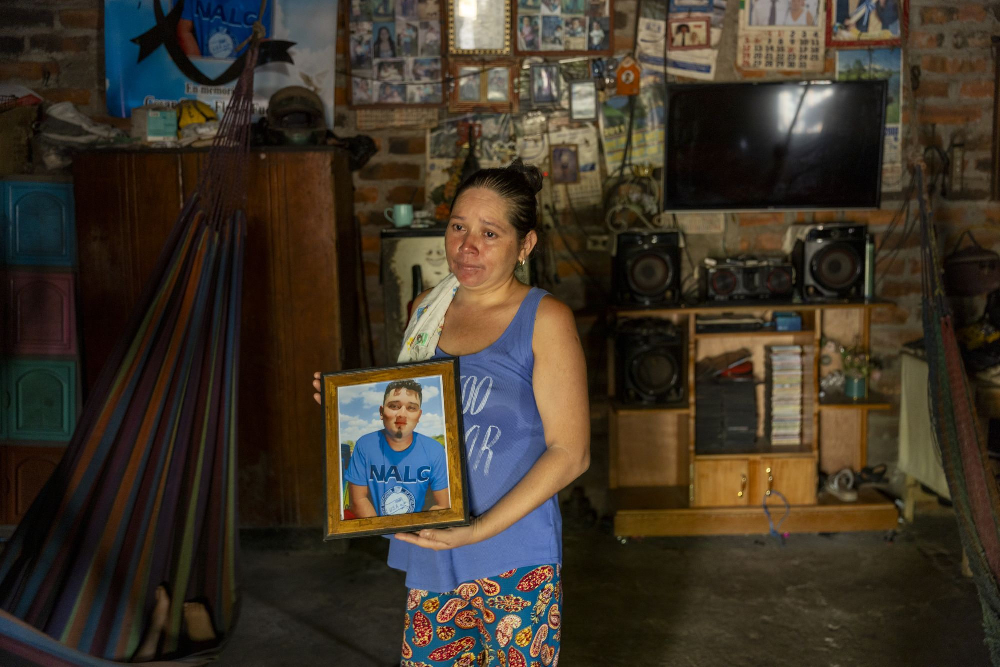
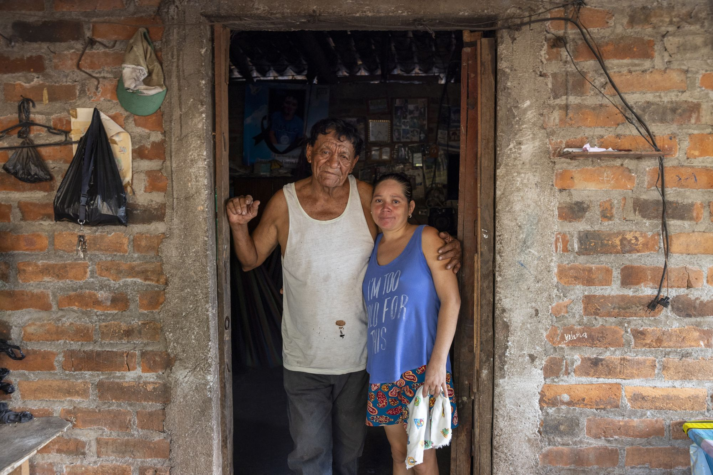
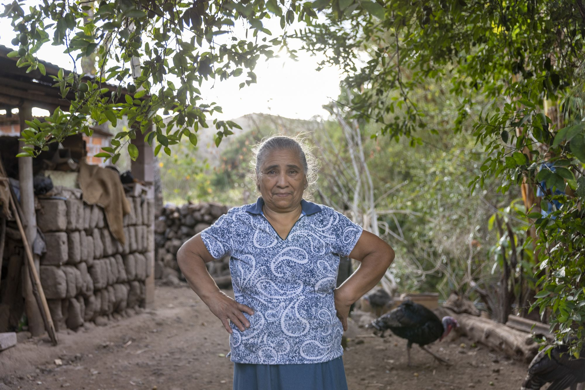
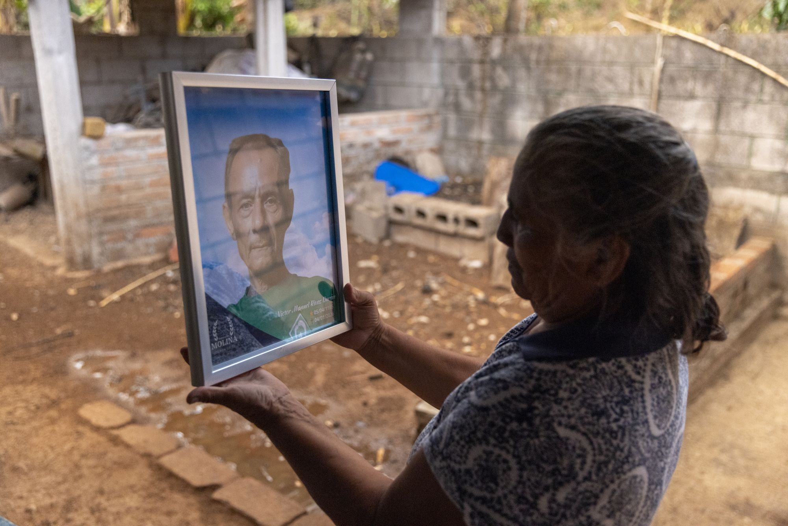
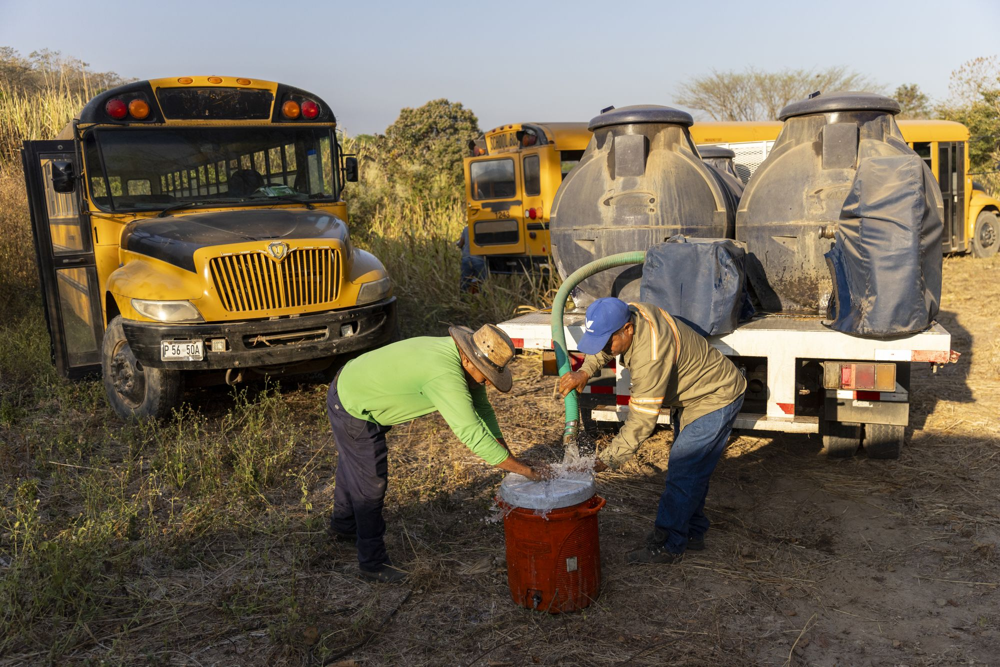
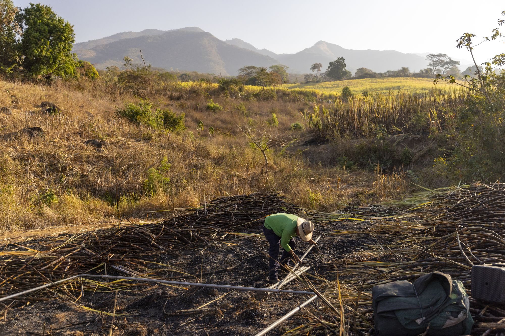

Heat, Work, & Worker Protection in Central America
A visual story from the Dry Corridor of Central America. La Isla Network and The Rockefeller Foundation.
Photographs by Ed Kashi / VII / Redux.

Shupá, Guatemala.
Gregorio Pérez García is sixty years old.
He has farmed the land around Shupá for most of his life. The mountains behind him are green. The soil is volcanic. The corridor that runs from southern Mexico through Guatemala, Honduras, and El Salvador is one of the most climate-punished agricultural regions in the Western Hemisphere. Temperatures have climbed steadily for two decades. Rainfall has grown erratic.



3,000 Swings a Day.
Qʼeqchiʼ men from Cobán, internal migrants who travel south each harvest season to cut cane for the Santa Ana Company, move through the burned fields outside Escuintla. A cane cutter swings a machete roughly 3,000 times per shift. By midmorning, air temperature can reach 100.4°F/38°C. But the heat a laboring body generates pushes core temperature higher still. A thermometer in shade reads one number. A sensor pressed against a cutter's skin reads another. The gap between the two is where risk lies: preventable heat-driven illness, injury, and death.



Edvin, Julio, and "La Creatina".
In Parcelamiento El Cajón, in sector Agüero, Guatemala, Edvin and his family sit in plastic chairs and recline on motorcycles on a concrete porch.



Cesar Was Twenty.
Blanca Rosa is thirty-five. Three months before this photograph was taken, her son, Cesar Omar Flores Fuentes, died of CKDnT. He was twenty years old.



Nobody should have to risk their life to earn a living. The protocols to prevent these deaths exist. The economics favor them. The science has been settled for years. What remains is the decision to act, by companies, by governments, by the institutions that set the terms under which people work.
Maria Catalina's husband did not have to die. Cesar did not have to die. Every heat-related death is preventable. It is what La Isla Network's evidence shows.

Water on a Schedule.
In Guazapa, El Salvador, La Isla Network's PREP program structures the workday around what the science demands: scheduled rest in shade, enforced hydration, real-time physiological monitoring.
Workers hydrate on a schedule, because long before the time a person feels thirsty in extreme heat, kidney stress has already begun.

